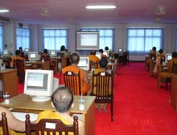

| ไอซีทีเปิดโลกชนบทสู่การสื่อสาร
ปัดฝุ่นโครงการ ๑ วัด ๑ ศูนย์การเรียนรู้ ***ณัฐพล ทองใบใหญ่*** |
|
ท่ามกลางความเปลี่ยนแปลงอย่างรวดเร็ว ของสังคมโลกสมัยใหม่ ที่เทคโนโลยีสารสนเทศและการสื่อสาร หรือ ไอซีที เข้ามามีบทบาทสำคัญ ในการดำเนินชีวิตประจำวัน โดยเฉพาะการใช้เป็นเครื่องมือ ช่วยส่งผ่านความรู้ และข้อมูลข่าวสารที่จำเป็น ต่อการพัฒนาและแข่งขัน ในระบบเศรษฐกิจโลก แต่สังคมไทยกลับประสบปัญหา ช่องว่างการเข้าถึง และใช้ประโยชน์จากไอซีที ระหว่างสังคมเมือง และสังคมชนบทอีกมาก
ดังนั้น รัฐบาลทักษิณ 1 จึงต้องการจัดทำโครงการ 1 วัด 1 ศูนย์ กลางการเรียนรู้ หรือ One Temple One e-learning Center: OTEC ขึ้น เพื่อลดช่องว่างการเข้าถึงและใช้ประโยชน์จากไอซีทีระหว่างสังคมเมืองและสังคมชนบท ขณะเดียวกันยังจะทำให้คนในชุมชนใกล้ชิดวัดมากขึ้น โดยเชื่อมั่นว่า วัดจะช่วยกล่อมเกลาจิตใจให้คนคิดดี ทำดีและลดปัญหาสังคมได้ ในขณะนั้น รัฐบาลได้มอบหมายให้กระทรวงเทคโนโลยีสารสนเทศและการสื่อสาร หรือ ไอซีที เป็นผู้รับผิดชอบการดำเนินโครงการ 1 วัด 1 ศูนย์กลางการเรียนรู้ทั้งหมด โดยพยายามผลักดันให้มีการจัดตั้งศูนย์คอมพิวเตอร์ในวัดแห่งแรกมาตั้ง แต่ตั้งกระทรวงไอซีทีเมื่อปี 2546 ในสมัย น.พ.สุรพงษ์ สืบวงศ์ลี ดำรงตำแหน่ง รมว.ไอซีที พร้อมกับวางเป้าหมายไว้ว่า จะต้องจัดตั้งศูนย์คอมพิวเตอร์ให้ครบจำนวน 99 วัด ในทั่วประเทศ อย่างไรก็ตาม ตั้งแต่วันนั้น จนถึงวันนี้ โครงการ 1 วัด 1 ศูนย์กลางการเรียนรู้ล่วงเลยระยะเวลามามากกว่า 3 ปี เปลี่ยน รมว.ไอซีทีไปแล้ว 3 คน และเปิดรับบริจาคเครื่องคอมพิวเตอร์ได้มากกว่า 200 เครื่อง กลับปรากฏว่า ยังไม่มีวัดใดที่ได้รับบริจาคเครื่องคอมพิวเตอร์และการวางระบบเครือข่ายอินเทอร์เน็ตเลย จนล่าสุด นายสรรอรรถ กลิ่นประทุม รมว.ไอซีที คนปัจจุบัน จึงคิดปัดฝุ่นโครงการดังกล่าว มาดำเนินการต่อ นายสรอรรถ กลิ่นประทุม กล่าวถึงสาเหตุที่ปัดฝุ่นโครงการ 1 วัด 1 ศูนย์การเรียนรู้มาดำเนินการใหม่ ว่า เพื่อให้บรรลุเป้าหมาย และความรับผิดชอบ ในการผลักดันให้เกิดสังคม แห่งการสร้างภูมิปัญญา การเรียนรู้อย่างต่อเนื่อง และลดช่องว่างการเข้าถึง และใช้ประโยชน์จากไอซีที ระหว่างสังคมเมืองและสังคมชนบท โดยคาดว่า โครงการดังกล่าว จะเป็นประโยชน์ต่อพระ นักเรียนและประชาชนทั่วไป ในการเข้าถึงข้อมูลข่าวสารบนอินเทอร์เน็ต รมว.ไอซีที อธิบายถึงขั้นตอน ในการดำเนินโครงการ1 วัด 1 ศูนย์การเรียนรู้ ว่า จะสำรวจวัดทั่วประเทศที่มีเกณฑ์และคุณ สมบัติที่เหมาะสม กับการจัดให้เป็นศาสนสถาน เพื่อเป็นศูนย์กลางแห่งการเรียนรู้ และพัฒนาความสามารถในการใช้คอม พิวเตอร์และอินเทอร์เน็ต ของคนในชุมชนนั้นๆ โดยวัดที่จะได้รับการคัดเลือก จากคณะกรรมการกระทรวงไอซีที และคณะ กรรมการสงฆ์จะต้องมีคุณสมบัติ และหลักเกณฑ์พร้อมทุกด้าน
OTEC เป็นอีกหนึ่งโครงการฯ ที่กระทรวงฯ คาดหวังว่า จะเป็นศูนย์กลางเพื่อพัฒนา การเรียนรู้ของคนในชุมชน เพราะสังคมไทยในอดีต วัดมีความสัมพันธ์ระหว่างบ้าน โรงเรียนและชุมชนมาก ดังนั้น วัดจึงเป็นทั้งศูนย์รวมของจิตใจ และการเรียนรู้ต่างๆ อย่างไรก็ตาม เพื่อให้โครงการฯ ดำเนินต่อไปอย่างต่อเนื่อง จึงมอบหมายให้ นายไชยรัตน์ ไทยเจียมอารีย์ เป็นผู้รับผิดชอบและติดตามงานอย่างใกล้ชิด รมว.ไอซีที กล่าวทิ้งท้าย นายไชยรัตน์ ไทยเจียมอารีย์ ที่ปรึกษา รมว.ไอซีที และโฆษกกระทรวงไอซีที ที่ได้รับมอบหมายให้รับผิดชอบโครง การ 1 วัด 1 ศูนย์การเรียนรู้ ให้ข้อมูลเกี่ยวกับศูนย์ OTEC ที่วัดเพชรสมุทรวรวิหาร เพิ่มเติม ว่า เป็นวัดแรกจาก 9 วัด 5 ภาค ในโครงการนำร่อง ส่วนเครื่องคอมพิวเตอร์ที่ได้รับมอบมีรายละเอียด คือ จอมอนิเตอร์ขนาด 15 นิ้ว ซีพียู Celeron 1 กิกะเฮิร์ต แรม 128 เมกกะไบต์ ฮาร์ดดิสก์ 20 กิกะไบต์ พร้อมซีดีรอม ที่ปรึกษา รมว.ไอซีที และโฆษกกระทรวงไอซีที ให้ข้อมูลต่อว่า คอมพิวเตอร์ที่มอบให้กับศูนย์ OTEC ที่วัดเพชรสมุทรวรวิหารมีทั้งหมด 20 เครื่อง โดยได้รับบริจาคจากสมาคม อุตสาหกรรมคอมพิวเตอร์ไทย ส่วนการติดตั้งซอฟต์แวร์มอบ หมายให้สำนักงานส่งเสริม อุตสาหกรรมซอฟต์แวร์แห่งชาติ เป็นผู้ดูแล ขณะที่การวางระบบเครือข่าย ได้รับความร่วมมือจาก บริษัท ทีโอที จำกัด (มหาชน) และบริษัท กสท โทรคมนาคม จำกัด (มหาชน) มาถึงคำถามแผนการดำเนินโครงการ 1 วัด 1 ศูนย์การเรียนรู้ นายไชยรัตน์ ตอบว่า กระทรวงไอซีทีจะเร่งดำเนินโครงการฯ นำร่องในอีก 8 วัด ประกอบด้วย ภาคกลาง สำนักปฏิบัติธรรมบุดดา จ.สิงห์บุรี ภาคเหนือ วัดหนองโค้ง จ.เชียงใหม่และ วัดพระธาตุหริภุญชัย จ.ลำพูน ภาคใต้ วัดเขาสุวรรณประดิษฐ์ จ.สุราษฎร์ธานี ภาคอีสาน วัดศรีนวลและวัดธาตุ จ.ขอนแก่น วัดศีรษะเกตุ จ.หนองคายและในภาคตะวันออก วัดไผ่ล้อม จ. ตราด มั่นใจว่า โครงการ OTEC จะเป็นประโยชน์ต่อชุมชน รวมทั้งลดช่องว่างการเข้าถึงและใช้ประ โยชน์จากไอซีทีระหว่างสังคมเมือง และชนบท โดยขณะนี้ กระทรวงฯ ได้เปิดรับบริจาคคอมพิวเตอร์ พร้อมอุปกรณ์ต่างๆ ทั้งใหม่และเก่าจากประชาชน และหน่วยงาน โดยกระทรวงฯ ได้หารือกับกรมสรรพากร เพื่อลดหย่อนภาษีให้กับบริษัท ที่บริจาคคอมพิวเตอร์เข้าร่วมโครงการฯ ด้วย ที่ปรึกษา รมว.ไอซีที และโฆษกกระทรวงไอซีที กล่าวปิดท้าย ทั้งหมด คือ รายละเอียดการเดินหน้าโครงการ 1 วัด 1 ศูนย์การเรียนรู้ ที่กระทรวงไอซีที ภายใต้การกำกับดูแลของ นายสรอรรถ กลิ่นประทุม รัฐมนตรีว่าการคนปัจจุบันนำขึ้นมาปัดฝุ่นใหม่ เพื่อผลักดันให้เกิดสังคมแห่งภูมิปัญญา การเรียนรู้อย่างต่อเนื่องและลดช่องว่างการเข้าถึง และใช้ประโยชน์จากไอซีทีระหว่างสังคมเมืองและชนบท ก็ไม่แน่ใจว่า กระทรวงไอซี ทีจะดำเนินการได้สำเร็จหรือไม่ ซึ่งคงต้องติดตามกันอย่างใกล้ชิดต่อไป... ที่มา : นสพ.ไทยรัฐ 8 ธ.ค.48
|
|
วัดท่าไทร |
 มาถึงหลักเกณฑ์ที่จะใช้คัดเลือกวัดเข้าร่วมโครงการ
1 วัด 1 ศูนย์การเรียนรู้ นายสรอรรถ อธิบายว่า สถานที่ต้องพร้อม มีระบบบริหารจัดการ
การดูแลความปลอดภัยและบุคคลกรทำหน้าที่ดูแลรักษาเครื่องคอมพิวเตอร์
อย่างไรก็ตาม เมื่อเร็วๆ นี้ กระทรวงไอซีทีได้คัดเลือกและทำพิธีเปิดศูนย์การเรียนรู้เป็นครั้งแรก
ที่วัดเพชรสมุทรวรวิหาร จ.สมุทรสงคราม เป็นวัด นำร่องวัดแรก เพราะมีความพร้อมตามตามหลักเกณฑ์มากที่สุด
มาถึงหลักเกณฑ์ที่จะใช้คัดเลือกวัดเข้าร่วมโครงการ
1 วัด 1 ศูนย์การเรียนรู้ นายสรอรรถ อธิบายว่า สถานที่ต้องพร้อม มีระบบบริหารจัดการ
การดูแลความปลอดภัยและบุคคลกรทำหน้าที่ดูแลรักษาเครื่องคอมพิวเตอร์
อย่างไรก็ตาม เมื่อเร็วๆ นี้ กระทรวงไอซีทีได้คัดเลือกและทำพิธีเปิดศูนย์การเรียนรู้เป็นครั้งแรก
ที่วัดเพชรสมุทรวรวิหาร จ.สมุทรสงคราม เป็นวัด นำร่องวัดแรก เพราะมีความพร้อมตามตามหลักเกณฑ์มากที่สุด